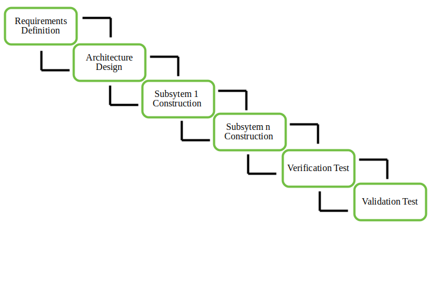

Tarkvara spetsifikatsioon, projekt ja teostus jaotatakse osadeks (increment), mida asutakse ükshaaval arendama.
Arendusprotsess algab klientide ja arendajate koostöös, kus kaardistatakse ja jaotatakse süsteemi nõuded tähtsuse järgi. Kõrgema prioriteediga nõuded valitakse esimesteks arendusetappideks (inkrementideks).
Määratakse, millised tarkvaraosad moodustavad iga inkrementi ja millises järjekorras neid arendatakse. Samuti määratakse tarneajad, et klient teaks, millal ta mingit osa süsteemist kasutada saab.
Esimene inkrement arendatakse, lähtudes selle jaoks määratud nõuetest. Kuna esimese osa nõuded on „külmutatud” ehk kindlaks määratud, saavad arendajad keskenduda selle osa põhjalikule väljatöötamisele.
Kui inkrement on valmis, testitakse seda põhjalikult, et tagada selle kvaliteet ja funktsionaalsus. Pärast edukat testimist tarnitakse inkrement kliendile, kes saab seda kasutada või testida, andes arendajatele tagasisidet.
Pärast esimese inkremendi tarnimist kogutakse kliendilt tagasisidet, mis aitab järgmise inkremendi nõudeid täpsustada. Klient võib välja tuua uusi nõudeid või teha ettepanekuid, mis parandavad süsteemi järgmisi osi.
Nüüd algab järgmise inkremendi detailplaneerimine ja arendamine, kasutades vajadusel eelmistest inkrementidest saadud teadmisi ja täpsustatud nõudeid. Seejärel integreeritakse valminud osa olemasolevasse süsteemi, võimaldades süsteemil kasvada järk-järgult terviklikuks.
Sama protsessi korratakse iga inkremendi puhul, kuni kõik nõutud süsteemiosad on valmis ja integreeritud. Iga uus inkrement tugineb eelnevalt kogutud tagasisidele ja vajadusel täiendatakse nõudeid, et süsteem vastaks kliendi ootustele.

| Head | Vead |
|---|---|
| Järkjärguline arendamine | Nõuete pidev täpsustamine |
| Kiire tagasiside tsükkel | Suur sõltuvus kliendipoolsest tagasisidest |
| Riskide vähendamine | Integreerimisprobleemid |